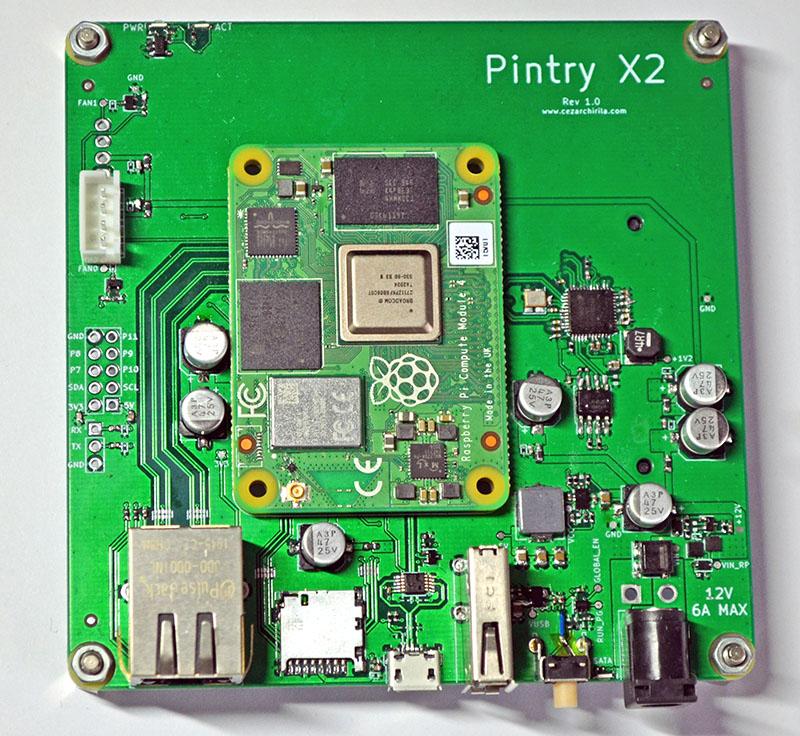
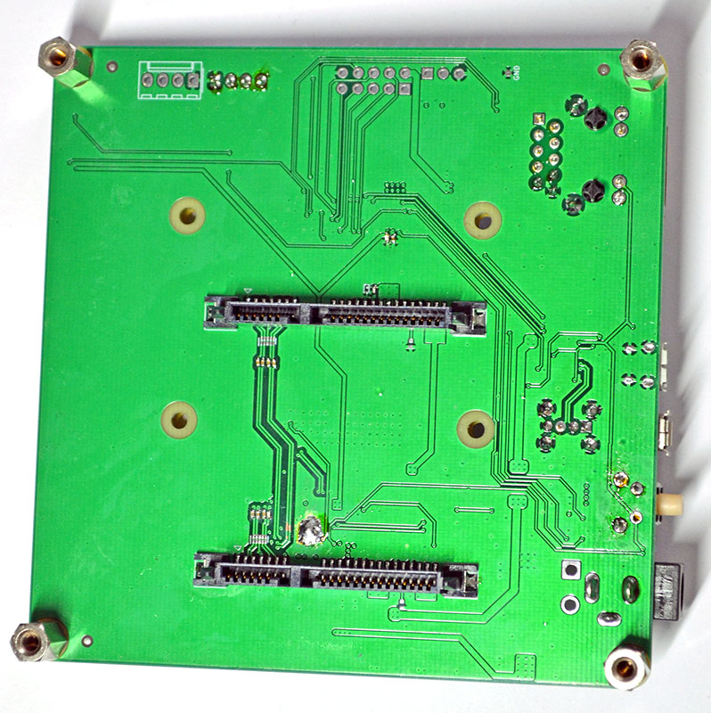
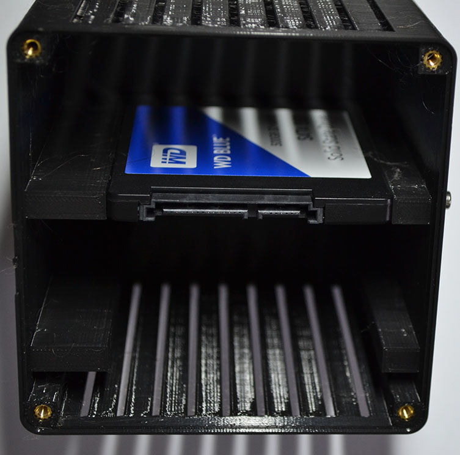

The Pintry X2 is a two bay NAS (Network Attached Storage) based on the Raspberry Pi Compute Module 4. It uses the ASMedia AS1061 PCIe to Sata bridge to connect up to 2 drives (3.5'/2.5' HDD or 2.5' SSD) to the SoM running Linux.
The project is open source and the repository can be found here. In the repository you can find the Kicad 6.0 project and the manufacturing and assembly files (Gerbers, BoM, interactive BoM) in the OutputJob folder as well as the PDF schematic and STEP file of the board. The STEP file of the enclosure and the STLs can be found in the 'Enclosure' folder.
A first version of the project has been built and tested and I am succesfully using it as my own personal NAS. The release version, V1.1, has not been built and tested, but it includes all the fixes found after troubleshooting V1.0.


The entire project revolved around this chip, the ASMedia ASM1061. Unfortunately you cannot buy these from your usual distributors (Digikey, Mouser, etc.) and ASMedia does not sell them or sends samples to individuals. I have managed to get my hands on a few from Taobao (using TBFocus as a broker). Another option would be to buy them from aliexpress, although stock is pretty scarce. Winsource is another alternative, although a bit pricy. Datasheet is not public, but you can find it on the internet as other engineers have accidentally shared it.
The fan only turns on when needed as I have used the 'gpio-fan' overlay as explained on the Github README page.
The two drives are held by M3 screws and they slide into the case, which you can see in the picture below.
I am using the Pintry-X2 with Raspberry Pi OS Lite (Bullseye) on which I have installed Samba and configured the watchdog and hardened the security a bit. I would recommend installing OpenMediaVault for a better experience, although I have personally not used it extensively before and I kind of like the lighweight system and flexibility a bare OS gives me.
I am not selling the bare / assembled PCBs or entire Pintry-X2 units. You can, however, make it yourself as all the required information is on the Github pge. If you have any questions about the project, feel free to contact me